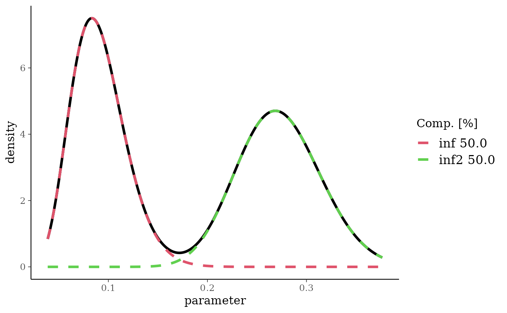

Density, cumulative distribution function, quantile function and random number generation for supported mixture distributions. (d/p/q/r)mix are generic and work with any mixture supported by BesT (see table below).
Usage
dmix(mix, x, log = FALSE)
pmix(mix, q, lower.tail = TRUE, log.p = FALSE)
qmix(mix, p, lower.tail = TRUE, log.p = FALSE)
rmix(mix, n)
# S3 method for class 'mix'
mix[[..., rescale = FALSE]]Arguments
- mix
mixture distribution object
- x, q
vector of quantiles
- log, log.p
logical; if
TRUE(not default), probabilities \(p\) are given as \(\log(p)\)- lower.tail
logical; if
TRUE(default), probabilities are \(P[X\leq x]\) otherwise, \(P[X>x]\)- p
vector of probabilities
- n
number of observations. If
length(n) > 1, the length is taken to be the number required- ...
components to subset given mixture.
- rescale
logical; if
TRUE, mixture weights will be rescaled to sum to 1
Value
dmix gives the weighted sum of the densities of each
component.
pmix calculates the distribution function by
evaluating the weighted sum of each components distribution
function.
qmix returns the quantile for the given p
by using that the distribution function is monotonous and hence a
gradient based minimization scheme can be used to find the matching
quantile q.
rmix generates a random sample of size
n by first sampling a latent component indicator in the
range \(1..K\) for each draw and then the function samples from
each component a random draw using the respective sampling
function. The rnorm function returns the random draws as
numerical vector with an additional attribute ind which
gives the sampled component indicator.
Details
A mixture distribution is defined as a linear superposition of \(K\) densities of the same distributional class. The mixture distributions supported have the form
$$f(x,\mathbf{w},\mathbf{a},\mathbf{b}) = \sum_{k=1}^K w_k \, f_k(x,a_k,b_k).$$
The \(w_k\) are the mixing coefficients which must sum to \(1\). Moreover, each density \(f\) is assumed to be parametrized by two parameters such that each component \(k\) is defined by a triplet, \((w_k,a_k,b_k)\).
Individual mixture components can be extracted using the [[
operator, see examples below.
The supported densities are normal, beta and gamma which can be
instantiated with mixnorm, mixbeta, or
mixgamma, respectively. In addition, the respective
predictive distributions are supported. These can be obtained by
calling preddist which returns appropriate normal,
beta-binomial or Poisson-gamma mixtures.
For convenience a summary function is defined for all
mixtures. It returns the mean, standard deviation and the requested
quantiles which can be specified with the argument probs.
Supported Conjugate Prior-Likelihood Pairs
| Prior/Posterior | Likelihood | Predictive | Summaries |
| Beta | Binomial | Beta-Binomial | n, r |
| Normal | Normal (fixed \(\sigma\)) | Normal | n, m, se |
| Gamma | Poisson | Gamma-Poisson | n, m |
| Gamma | Exponential | Gamma-Exp (not supported) | n, m |
Examples
## a beta mixture
bm <- mixbeta(weak = c(0.2, 2, 10), inf = c(0.4, 10, 100), inf2 = c(0.4, 30, 80))
## extract the two most informative components
bm[[c(2, 3)]]
#> Univariate beta mixture
#> Mixture Components:
#> inf inf2
#> w 0.4 0.4
#> a 10.0 30.0
#> b 100.0 80.0
## rescaling needed in order to plot
plot(bm[[c(2, 3), rescale = TRUE]])

summary(bm)
#> mean sd 2.5% 50.0% 97.5%
#> 0.17878788 0.09898301 0.04389723 0.15654866 0.35327791